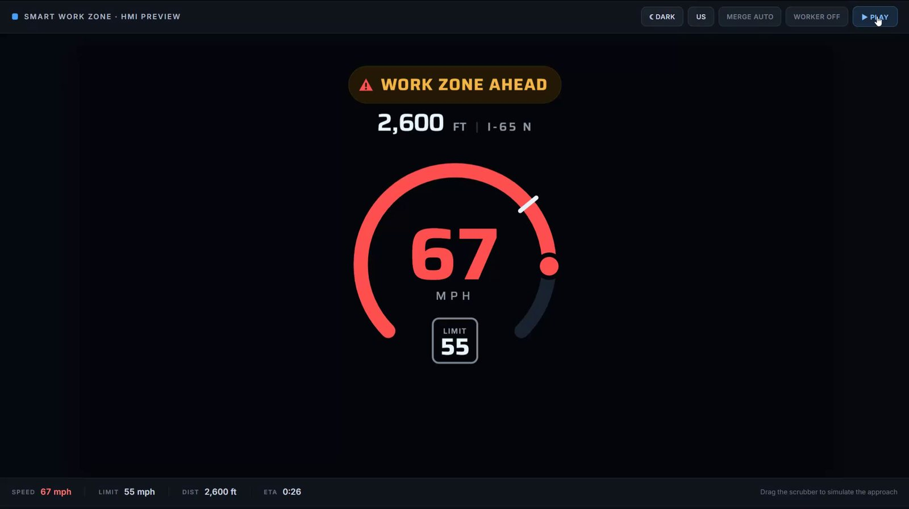
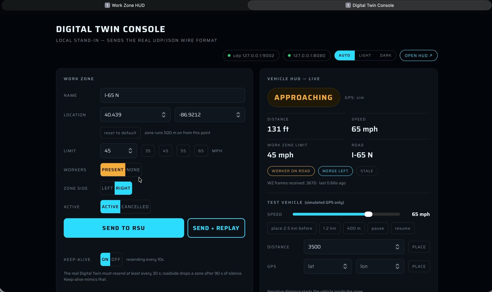
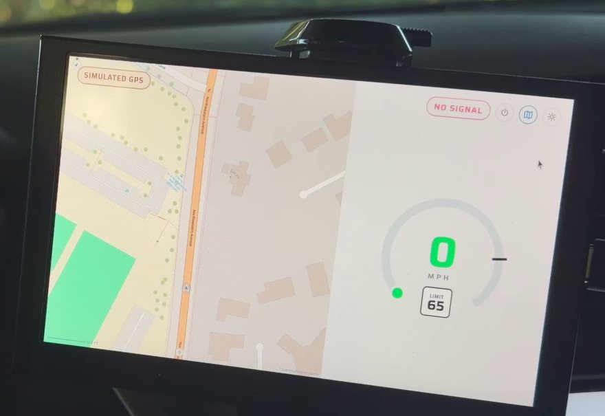

Connected Vehicles
The vehicle side of the smart work zone. A digital twin of the work zone feeds a roadside unit, which broadcasts over C-V2X to an onboard unit that drives an in-vehicle display — so drivers learn about the closure, the workers and the speed limit before they can see them.
My role: I designed and built the in-vehicle display and the digital-twin console, and integrated the roadside-to-vehicle message link.

On the road, October 2026
A C-V2X work-zone test with INDOT on October 21, 2026: how the warning travels from the roadside to the car, then one real drive through the work zone, filmed from the roadside and from inside the test vehicle. No audio.
A warning only helps if it reaches the driver
The roadside risk-prediction system knows which vehicles are heading for trouble, and the digital twin knows where the work zone is and whether crews are present. None of that matters unless it shows up in the car in time for the driver to react.
Connected-vehicle radio solves the last few hundred feet: a roadside unit at the work zone talks directly to an onboard unit in each equipped vehicle, with no cellular network in between.
Digital twin → roadside → vehicle
Digital-twin console
Set up a work zone — location, speed limit, closed side, workers present — and push it to the roadside unit using the same UDP/JSON format the real digital twin uses, or replay a vehicle's approach to test the chain end to end.
Roadside and onboard units
Message encoders and decoders run on small edge devices next to each unit. Work-zone information goes out to vehicles; each vehicle's Basic Safety Messages come back so the twin knows who is approaching.
In-vehicle display
Distance to the work zone, worker presence and guidance, and current speed against the work-zone limit, with a map view and light and dark modes. Packaged as a desktop app for the in-vehicle screen.


From bench to vehicle
Part of a larger smart-work-zone effort
This work is part of the Integrated Smart Work Zone project with INDOT at Purdue University. It takes its risk levels from the Work Zone Risk Prediction system. I work on it in Prof. Yiheng Feng's CART Lab.